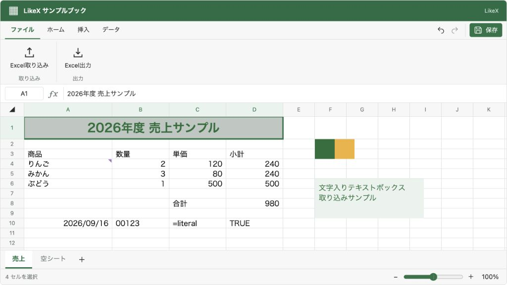
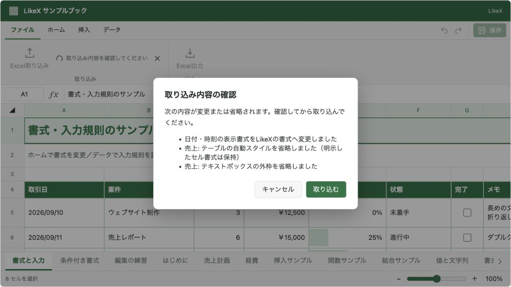

@likex/spreadsheet
Excel取り込み
.xlsxを下書きへ取り込み、警告の確認・編集許可・Undoにつなげます。画面なしのJSON変換にも対応します。
画面例を見る ↓「ファイル」タブの「Excel取り込み」から .xlsx を開けます。同じタブに「Excel出力」もあります。取り込みはブック全体を新しい下書きに置き換えます。サーバーへの保存は行わず、通常の「保存」で onSave にJSONを渡します。
画面から使う#
<Spreadsheet
initialWorkbook={workbook}
onSave={saveWorkbook}
onEvent={event => {
if (event.type === "import") {
console.log(event.status, event.requestId);
}
}}
/>
// 取り込みだけを非表示・無効にする
<Spreadsheet onSave={saveWorkbook} features={{ importExcel: false }} />importExcel は既定でONです。読み取り専用、または onSave を省略した場合には取り込めません。Excel出力は読み取り専用でも使えます。両方を無効にすると「ファイル」タブも消えます。
未保存の変更や入力中の編集があると、置き換え前に確認します。対応していない内容を検出した場合は、省略・変換の内容をダイアログで示し、取り込むかキャンセルするか選べます。読み込み失敗やキャンセルでは元の下書きを維持します。取り込みが成功すると、Undoで元のブック、Redoで取り込んだブックに戻せます（undoRedo が有効な場合）。
初回の変更には通常の onEditRequest が適用されます。読み込み・内容確認・編集許可の待機中に別の編集が発生した場合は、古い確認結果で上書きせず取り込みを中止します。
画面を用意せずJSONへ変換する#
import { importSpreadsheetXlsx } from "@likex/spreadsheet/model";
// ブラウザのFile、Blob、ArrayBuffer、Uint8Arrayを渡せます。
const result = await importSpreadsheetXlsx(file);
console.log(result.warnings);
const workbook = result.workbook;
// 取得したworkbookはinitialWorkbookや、画面なしの操作APIへ渡せます。Node.jsでは readFile の結果（Buffer は Uint8Array の一種）を渡せます。DOM・Reactのマウント・外部通信は不要です。パッケージの通常の入口からも同じ関数をexportしています。コピー導入の場合は components/spreadsheet/model-entry が画面なしの入口です。
type SpreadsheetExcelImportResult = Readonly<{
workbook: SpreadsheetWorkbook;
warnings: readonly SpreadsheetExcelImportWarning[];
}>;
type SpreadsheetExcelImportWarning = Readonly<{
code: "unsupported" | "adjusted" | "omitted";
message: string;
sheetName?: string;
count?: number;
}>;
type SpreadsheetExcelImportOptions = { signal?: SpreadsheetExcelImportSignal };signal には通常の AbortController.signal を渡せます。公開型は必要なメソッドだけを持つ構造型で、画面なしのTypeScriptプロジェクトにDOMの型定義を要求しません。
戻り値の warnings は同種の項目をまとめた一覧です。独立関数は警告があっても結果を返すため、利用側で確認・拒否・記録などを行ってください。不正なファイル、サイズ超過、モデルの上限超過はPromiseのrejectです。ExcelのIDをアプリのIDとして流用せず、取り込んだブックには新しいシート・描画等のIDを割り当てます。
表示中のブックへ取り込む#
import type { SpreadsheetHandle, SpreadsheetImportExcelOptions } from "@likex/spreadsheet";
const abort = new AbortController();
const options = {
signal: abort.signal,
onReview: result => result.warnings.length === 0,
} satisfies SpreadsheetImportExcelOptions;
// ref: React.RefObject<SpreadsheetHandle | null>
// この例は変換・省略の警告があるファイルを適用せずキャンセルします。
const result = await ref.current!.importExcel(file, options);HandleもGUIと同じ編集許可・機能設定・変更通知・Undoの経路を通ります。未保存の変更や未確定の入力があれば既定ではrejectします。利用側で置き換えを確認した場合だけ discardChanges: true を指定してください。警告を表示する場合は onReview(result) から true / false、またはそのPromiseを返します。省略した場合は警告を含めて取り込みます。
abort.abort() で処理を中止できます。中止は name === "AbortError" の例外になります。コンポーネントのアンマウント・取り込み機能のOFF・読み取り専用への変更でも待機中の取り込みを中止します。同時に複数の取り込みは実行できません。
onEvent には type: "import", format: "xlsx" が届きます。1回の処理は同じ requestId を使い、File入力の場合は fileName も含みます。
status | 意味・追加情報 |
|---|---|
start | 読み込み開始。 |
success | 下書きへの適用完了。workbook と warnings を含みます。保存完了ではありません。 |
error | 失敗。message に理由。 |
cancelled | 開始済みの取り込みを中止。 |
読み込む内容と制約#
| 内容 | 扱い |
|---|---|
| 複数シート | 名前・順序・セルを取り込みます。非表示などLikeXにない表示設定は警告付きで通常表示にします。 |
| セル | 文字列・数値・真偽値、共有文字列・インライン文字列を読み込みます。先頭ゼロや = で始まる文字列は文字列として保持します。 |
| 数式 | 対応する構文・関数を保持して再計算します。未対応の式は保存済み計算結果へ変換し、結果もなければ空値にして警告します。外部ブックを取得しません。 |
| 書式 | フォント・色・太字・斜体・下線・基本罫線・配置・折り返し・表示形式。独自書式は対応する形式へ近似する場合があります。 |
| 日付・時刻 | Excelの1900／1904日付方式を考慮し、LikeXの表示形式へ変換します。1904方式のブックは計算基準の違いを避けるため、数式を保存済み計算結果に置き換えて警告します。 |
| サイズ・結合 | 行高・列幅・結合範囲。フォントや単位の差で折り返し・位置が多少異なることがあります。 |
| 名前付き範囲 | ブック全体を対象とする、1シート内の連続範囲。数式名・複数範囲等は警告付きで省略します。 |
| テーブル・入力規則 | 対応可能なテーブル定義と基本的な入力規則。数式や独自表スタイルの完全な再現は対象外です。 |
| 画像 | 内包されたPNG・JPEG・GIF・WebP。位置・大きさ・回転・反転を取り込みます。 |
| 図形・テキストボックス | 対応する16種類とテキスト。位置・色・回転・反転を取り込みます。複雑な文字装飾・調整点などは完全には再現しません。 |
| コメント | 従来形式のメモ。スレッド形式のコメントは対象外です。 |
| その他 | グラフ・ピボット・グループ図形・条件付き書式など、未対応の定義は警告付きで省略します。 |
Excelでは、規則に合わない既存の値を残したまま入力規則を設定できます。取り込み時にこの状態を検出した場合は値を保持し、そのセルの規則だけを外して警告します。対応する日付シリアル値は、日付の入力規則を維持したまま取り込めます。
Excelとの完全な往復互換ではありません。警告を確認し、保存・再編集の基本形式にはJSONを使ってください。未対応の内容を後からExcelへ出力して復元することはできません。
.xls・.xlsm・.xlsb・暗号化されたファイル・ZIP64には対応しません。拡張子だけで判断せず、ZIPと内部のOOXMLを検証します。外部リンク・マクロ・XML外部エンティティを実行・取得しません。
入力は32 MiBまで、ZIPの展開後は1エントリ16 MiB・合計64 MiB・4,096エントリまでです。実際に展開した量にも上限を適用します。共有文字列・共有数式をセルに展開した後の文字数にも、合計32 Mi文字の制限があります。画像は1枚5 MiB・合計20 MiBなど既存の画像制限、ブックは10,000行・1,000列・100シート・保持セル100,000件など SPREADSHEET_LIMITS の範囲内です。これらは安全な処理の上限であり、快適な操作を保証するファイルサイズではありません。
圧縮ファイルの展開には標準の DecompressionStream("deflate-raw") を使います。対応ブラウザ、またはNode.js 22.13以降で実行してください。追加の実行時パッケージは不要です。
XMLにも1件16 MiB・深さ64・600,000ノード・テキスト16 Mi文字の上限があります。共有文字列は100,000件までです。
画面例
{kind=link}

{kind=link}
